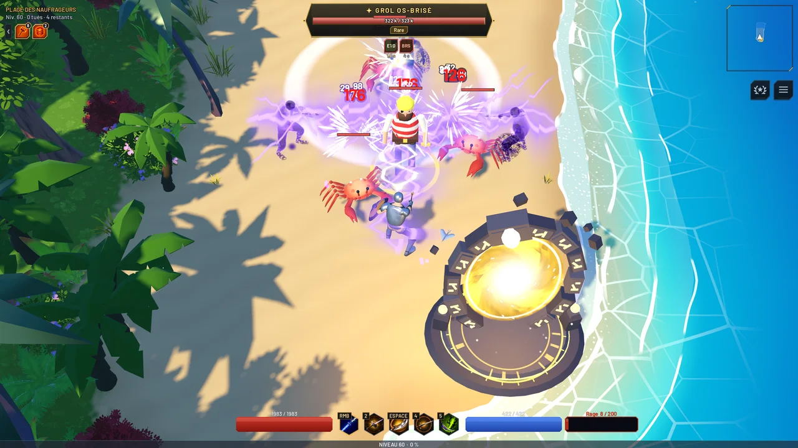
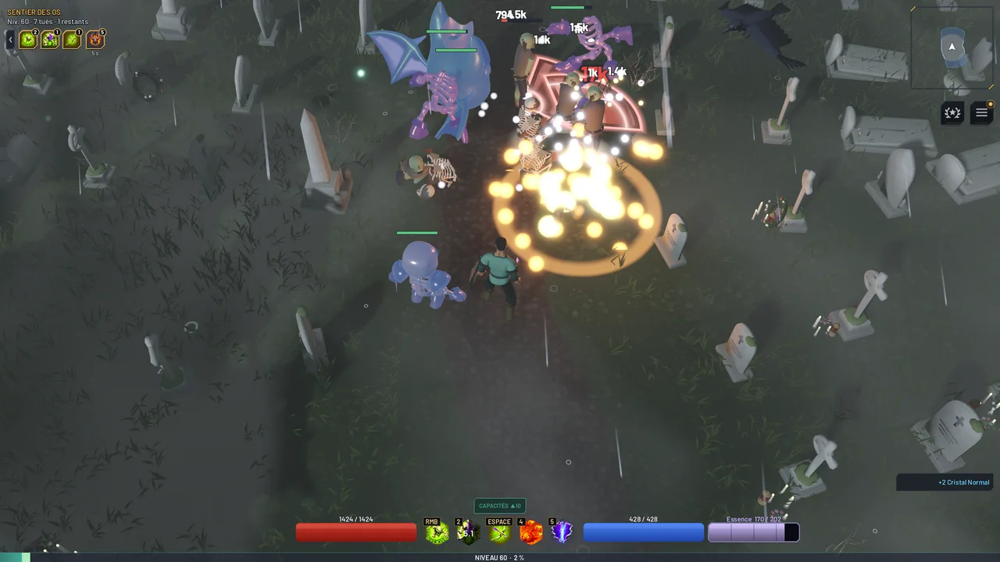
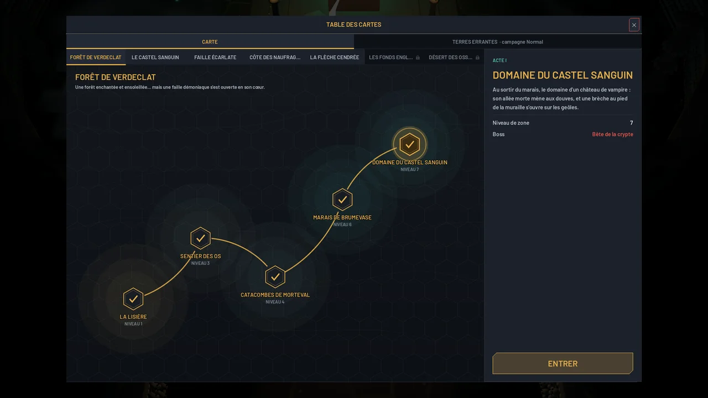

Actualités
Chaque version présentée, avec ses notes de version.
 Site
SiteLe créateur de build est en ligne
Planifiez votre personnage sur le site : équipement, compétences et supports, classe, talents, Arbre des Terres et système solaire, avec les vraies règles du jeu.

0.8.0Lames, rayons, hôtel des ventes et ligue Encre
Deux familles de mêlée et vos ombres, des rayons canalisés, un hôtel des ventes, la ligue Encre et le jeu en anglais.
 0.7.0
0.7.0Le Graveur de Runes, ligues et Castel
Le Graveur de Runes, les invasions spatiales, les failles glitchées et le Castel Sanguin en acte II.
 0.6.5
0.6.5Monstres vivants, boss redoutables et sortie au grand jour
Les monstres des premiers niveaux bougent comme de vraies créatures, chaque boss a ses attaques et les catacombes débouchent à l'air libre.

0.6.4Cimetière, catacombes et nouvelle forge
La forêt de Verdeclat refaite, un cimetière sous la pluie, des catacombes d'ossements, l'auto-craft à la forge et une campagne jusqu'au niveau 55.
 0.6.3
0.6.3Bestiaires et profondeurs
Un bestiaire fait main pour chaque acte, des décors qui s'animent, trois actes en avant-première et un vrai tir à l'arc.
 0.6.2
0.6.2Os, orages et grand ménage
L'invocateur reçoit une vraie armée, le monde gagne la pluie, l'orage et la nuit, les talents sont remis à plat.
 0.6.1
0.6.1Braises et embruns
Le feu repensé de fond en comble, de vraies musiques, des ambiances enregistrées et des sorts qui s'enchaînent librement.
 0.6.0
0.6.0La Côte des Naufrageurs
Un quatrième acte au bord de la mer, une île refaite, les attributs, des arbres de talents repensés et un nouvel écran titre.
 0.5.0
0.5.0La forge des cendres
La forge refaite de fond en comble, une seule compétence de départ par classe et des icônes nettes à toutes les échelles.

0.4.0Trois actes, quinze donjons
Une campagne en trois actes et quinze donjons, des attaques ennemies lisibles et une palette par classe.
 0.3.0
0.3.0Terres, légendaires et renouveau visuel
Huit classes jouables, trente légendaires de plus, l'Arbre des Terres et un nouveau menu principal.
 0.2.0
0.2.0Canalisation, forge et confort
L'Invocateur, la canalisation à cumuls, un Tourbillon refait et une forge plus claire.
 0.1.0
0.1.0Première version jouable
La première version jouable : une campagne dans la forêt de Verdeclat, trois classes, onze arbres de talents et la forge.